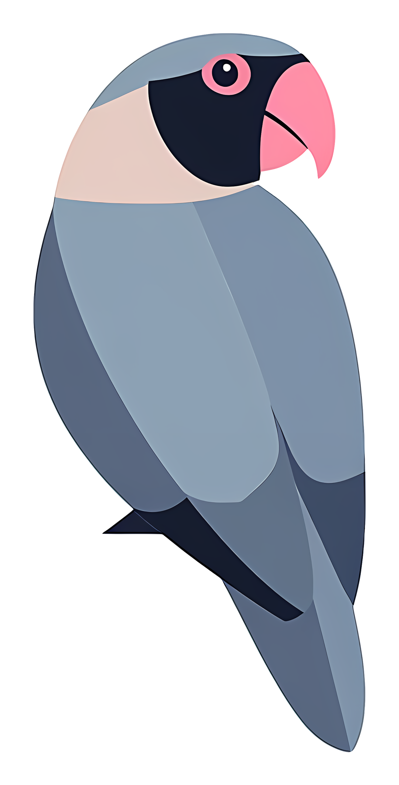
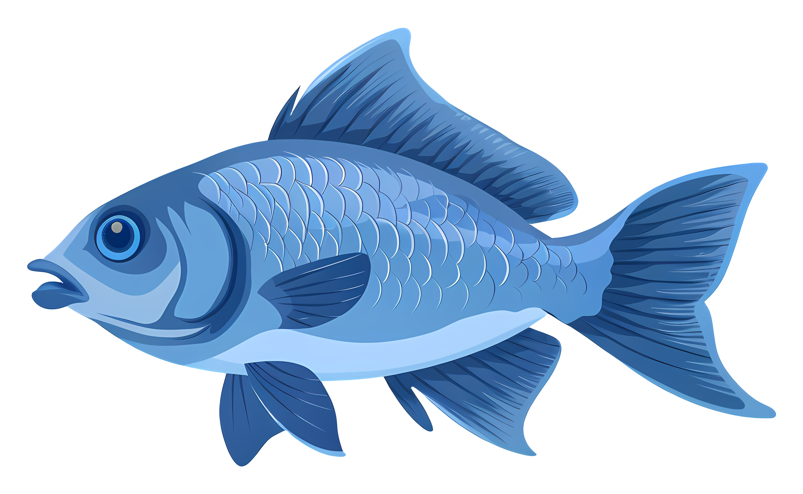

Welcome to Sardinia Science Center!
Here we aim to provide a platform for scientists and tourists alike to discover what the island of Sardinia has to offer in terms of science. Sardinia is very well known for its culture and beauty, but did you know that it was once inhabited by the ancient shark Megalodon? It was also once populated by the very intriguing Nuragic civilization, who left behind amazing structures which can still be found on the island. Sardinia houses a vast amount of important paleontological and archaeological sites that can be explored, and the findings of which are displayed in museums such as the National Archaeological Museum of Cagliari. Sardinia also has plant and animal species that can only be found there! For example, there’s the Giara horses and spiny cornflower, amongst others.
Explore the website to find more of the impressive science behind Sardinia!
Here on this map you can locate famous places in Sardinia

Paleontology

Reserves & Parks

Marine Biology